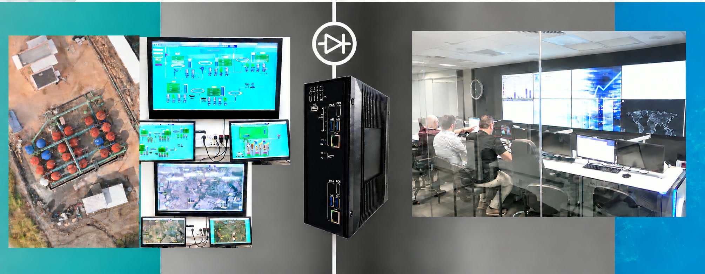

Secure Advanced Data Telemetry via SMTP
How a critical infrastructure site sends water treatment data to a global water company's analytics platform in the cloud with one-way, hardware-enforced security
1The Problem
Industrial operators increasingly depend on data from their equipment. Combined with automation, machine learning and big data, it helps improve plant KPIs, eliminate unplanned downtime and move from reactive repairs to proactive maintenance.
Often that data has to be sent to international vendors who can respond faster to failures and offer services such as advanced analytics, extended asset life and better BOM control. That flow of information has to be secure. If it isn't, the same channel that carries useful data out could let malicious actors in.
2The Challenge
Major industrial sites use large volumes of process water, usually for cooling or as a by-product of manufacturing. Keeping water treatment running reliably is essential to keeping the whole plant running.
A critical infrastructure site with a water treatment plant supplied by a global water company needed to send telemetry from its PLCs to an asset performance analytics platform. The platform combines advanced data and analytics to help water treatment professionals prevent unplanned downtime, increase asset reliability, extend asset life and optimize operations.
To get those benefits, plant data had to reach the cloud. But a direct connection from a critical infrastructure network to the internet would expose the inside network to outside threats. The site needed a secure way to feed the platform without opening the door to attackers.
3The Solution
Plant data from the PLCs is gathered in the vendor's data-collection computer, which sends it to the cloud by SMTP (email). To secure that connection, Terafence placed a TFG121 unit between the data-collection computer and the cloud.
- PLC data is aggregated in the vendor's data-collection computer
- The data-collection computer sends data to the cloud by SMTP
- The Terafence TFG121 allows one-way communication only
- The inside network is protected from any inbound access
Because the TFG121 lets data travel in one direction only, the SMTP stream reaches the analytics platform as intended, while nothing from the internet can travel back through the link into the plant.

4The Impact
The site now gets the full value of cloud-based asset performance analytics without putting its critical infrastructure network at risk.
Whether data goes to a vendor's cloud or a partner's analytics platform, Terafence lets industrial operators share their data and keep control of their networks.
Inside network protected.
One-way communication blocks any route from the internet back into the plant.
Analytics fully enabled.
The analytics platform receives the PLC telemetry it needs to prevent downtime and optimize operations.
Longer asset life.
Continuous data helps improve reliability and extend the life of water treatment assets.
Existing workflow intact.
The vendor's data-collection computer and SMTP delivery keep working as designed, with security added in line.
Tell us where your boundary sits
Say what has to cross it. We will help you choose the right device and plan a pilot.